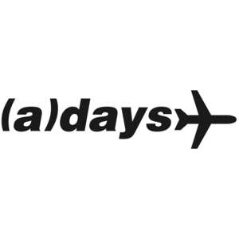

Trade Mark Journal No.2025/019 9 May 2025
UK00004178176 24 March 2025 (18,25,28,41)

- Class 18
- Bags; Tote bags; Luggage bags; Duffle bags; Duffel bags; Carry-on bags; Toiletry bags; Bags for clothes; Drawstring bags; Carry-all bags; Belt bags and hip bags; Carrying bags; Grocery tote bags; Cross-body bags; Luggage, bags, wallets and other carriers; Crossbody bags; Cloth bags; Duffel bags for travel; Shoe bags; Kit bags; Travel bags; Bags for travel; Garment bags; Shoulder bags; Gym bags; Cabin bags; Travelling bags; Traveling bags; Overnight bags; Boot bags; Bum bags; Sport bags; Sports bags; Bags for sports; Bags for sports clothing; Athletics bags; All-purpose sports bags; Athletic bags; All purpose sport bags; Sports [Bags for -]; All purpose sports bags; Bags for school; School bags; Trunks and travelling bags; Casual bags; School backpacks; School book bags.
- Class 25
- Clothes for sport; Sport shirts; Sport coats; Sports clothing [other than golf gloves]; Clothes for sports; Sports jackets; Jackets being sports clothing; Clothing for sports; Sports clothing; Sports garments; Clothes; Clothing; Denims [clothing]; Jackets [clothing]; Shorts [clothing]; Aprons [clothing]; Jackets (Stuff -) [clothing]; Linen clothing; Headbands [clothing]; Headbands for clothing; Bottoms [clothing]; Gloves [clothing]; Gloves as clothing; Trunks being clothing; Jerseys [clothing]; Clothing for leisure wear; Hoods [clothing]; Woolen clothing; Ready-to-wear clothing; Tops [clothing]; Belts [clothing]; Knitwear [clothing]; Ready-made clothing; Embroidered clothing; Visors [clothing]; Casual clothing; Knitted clothing.
- Class 28
- Sport balls; Soccer ball bags; Bags specially adapted for sports equipment; Bags adapted for sporting articles; Balls for sports; Sports balls; Sporting articles; Gymnastic and sporting articles; Sporting articles and equipment; Balls being sporting articles.
- Class 41
- Sporting activities; Sporting and recreational activities; Sporting and cultural activities; Cultural and sporting activities; Sports activities; Entertainment, sporting and cultural activities; Entertainment services relating to sporting events; Entertainment services relating to sport; Sports entertainment services; Video taping; Video editing; Video production; Editing of video recordings; Audio and video production, and photography; Video tape production; Audio, film, video and television recording services; Production of video recordings; Audio, video and multimedia production, and photography; Video film production; Recording, film, video and television studio services.
AwayDaysYT Ltd